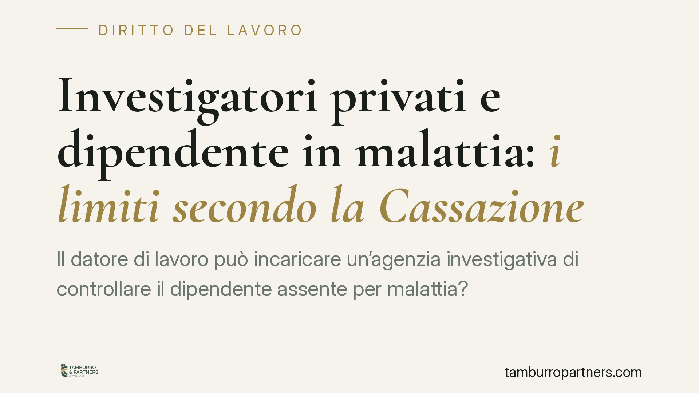

Investigatori privati e dipendente in malattia: i limiti secondo la Cassazione
Il datore di lavoro può incaricare un'agenzia investigativa di controllare il dipendente assente per malattia? La Corte di Cassazione ha rimesso la questione a pubblica udienza, segnalando che le prove raccolte con metodi eccessivamente intrusivi o provocatori possono risultare inutilizzabili. Un tema delicato, sospeso tra tutela del patrimonio aziendale e dignità del lavoratore.

Il caso e il contesto processuale
La vicenda nasce da un giudizio in cui il datore di lavoro aveva utilizzato il materiale di un'agenzia investigativa per contestare a un dipendente comportamenti incompatibili con lo stato di malattia dichiarato. La Corte d'Appello di Potenza aveva valutato quelle prove; il caso è poi approdato in Cassazione.
Si tratta, allo stato, di un'ordinanza interlocutoria di rimessione: la Sezione ha ritenuto la questione meritevole di trattazione in pubblica udienza. È bene precisarlo, perché un rinvio di questo tipo non contiene ancora la decisione definitiva né enuncia un principio di diritto. Segnala, piuttosto, la volontà di approfondire il tema, potenzialmente per fissare un orientamento più netto. Il numero e l'anno dell'ordinanza vanno verificati sul testo ufficiale prima di qualsiasi citazione in atti.
Inquadramento normativo
Il controllo del datore di lavoro trova i suoi limiti negli artt. 2, 3 e 4 dello Statuto dei lavoratori (L. 300/1970). L'art. 3 impone che i nominativi e le mansioni del personale di vigilanza siano comunicati ai lavoratori. L'art. 4 disciplina i controlli a distanza tramite impianti audiovisivi e strumenti di lavoro.
Da questo impianto la giurisprudenza di legittimità ha ricavato una distinzione ormai consolidata. La vigilanza sull'adempimento della prestazione lavorativa non può essere affidata a investigatori privati: quel controllo spetta al datore e al personale interno, nelle forme previste dallo Statuto. È invece legittimo il ricorso all'agenzia investigativa quando l'obiettivo non è verificare il rendimento, ma accertare condotte illecite o fraudolente che esulano dalla prestazione: il caso tipico è proprio la simulazione della malattia, cioè l'assenza fittizia per svolgere altre attività.
Su questa linea la Cassazione si è espressa più volte in senso favorevole al datore, purché il controllo sia mirato, proporzionato e non si traduca in una sorveglianza continuativa e generalizzata della persona.
L'elemento di novità: il rischio della provocazione
Il profilo che la Corte intende approfondire riguarda il metodo con cui le prove vengono raccolte. Quando l'attività investigativa non si limita a documentare un comportamento spontaneo del lavoratore, ma tende a indurlo o sollecitarlo a tenere una determinata condotta, si avvicina alla figura dell'agente provocatore.
In questi casi il tema non è penalistico in senso stretto, ma processuale: si discute dell'utilizzabilità della prova. Una prova formata in modo scorretto, o lesiva della dignità e dei diritti fondamentali del lavoratore tutelati dallo Statuto, può essere ritenuta inidonea a fondare la contestazione disciplinare o il licenziamento. È su questo crinale — tra prova genuina e prova artificiosamente costruita — che si concentra l'attenzione della Corte.
Implicazioni pratiche
Per il datore di lavoro il messaggio è di cautela. L'incarico investigativo resta uno strumento legittimo per accertare frodi, ma va circoscritto: obiettivo definito, durata limitata, assenza di qualsiasi sollecitazione attiva del comportamento da provare. Un dossier costruito su appostamenti generalizzati o su condotte indotte rischia di essere dichiarato inutilizzabile, con caduta dell'intera contestazione.
Per il lavoratore, la pronuncia conferma che l'assenza per malattia non è una zona franca: comportamenti gravemente incompatibili con la patologia dichiarata possono legittimamente essere accertati. Al tempo stesso, chi ritenga di aver subito un controllo eccessivamente invasivo dispone di argomenti processuali per contestare le prove raccolte.
Cosa fare in concreto
Per il datore di lavoro:
- Conferisci all'agenzia un incarico scritto e circoscritto, indicando l'illecito specifico da accertare e i tempi.
- Verifica che l'attività si limiti a osservare condotte spontanee, senza alcuna sollecitazione o inganno.
- Conserva la documentazione (relazioni, riprese) in modo tracciabile e nel rispetto della normativa privacy.
Per il lavoratore:
- Richiedi l'esibizione integrale del materiale investigativo posto a fondamento della contestazione.
- Fai valutare a un legale eventuali profili di illegittimità del metodo di raccolta prima di rendere giustificazioni.
Consigliamo, in entrambi i casi, di attendere l'esito della pubblica udienza prima di consolidare strategie difensive fondate esclusivamente su questa specifica pronuncia.
---
Contributo informativo a cura di Tamburro & Partners Avvocati - Avv. Giuseppe Tamburro. Non costituisce parere legale.
Ogni storia di lavoro ha i suoi tempi.
Se gestisci HR e vuoi un confronto su contenzioso, ispezioni o licenziamenti, scrivi allo studio. Ti rispondiamo entro un giorno lavorativo.